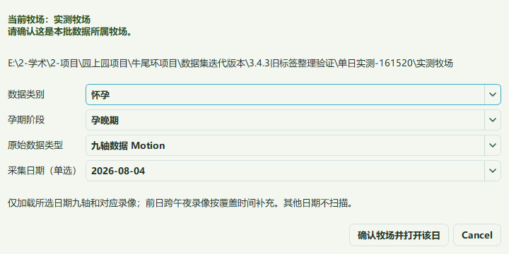
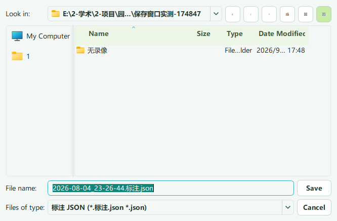
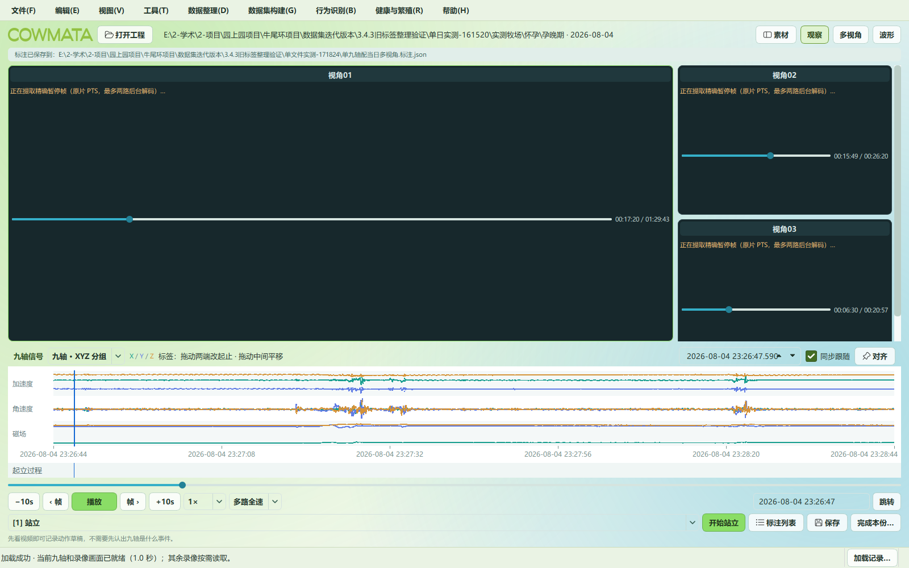

打开单日工程
先选牧场根目录，再选类别、孕期、Motion 和一个日期。只列下一层文件夹，不递归扫描素材。PPG 保留占位。首份九轴与首路录像优先显示，其余索引后台继续。

先选牧场根目录，再选类别、孕期、Motion 和一个日期。只列下一层文件夹，不递归扫描素材。PPG 保留占位。首份九轴与首路录像优先显示，其余索引后台继续。

打开单个九轴会查找当天 Video；打开单个视频会要求选择一份九轴，支持不同磁盘。单文件模式每次点击保存都选择存放位置，取消则继续保留当前工作。


标注工程 / Motion / 日期 / 设备-耳标-现场号 / 起始时间.标注.json 标注工程 / PPG / （预留）
不用同时维护 annotations 和导出标注两份成果。索引与写入锁由软件管理。原始采样时间不截断，资源文件名精确到秒。
在独立的数据集构建菜单检查来源、按行为与耳标构建或生成综合决策输入。完整成果、片段和兼容输出集中在“标注分享与片段”。
原始JSON / 耳标_设备_记录起始时间.json 标注 / 耳标_设备_记录起始时间.标注.csv 行为数据集 / 行为 / 耳标 / 耳标_设备_行为起始时间-毫秒.npz
不添加结束时间、哈希或事件编号。索引保留完整校验值；同名不同内容不覆盖。身份或时间冲突不进训练，未标注不当负例，所有行为共享按牛划分。